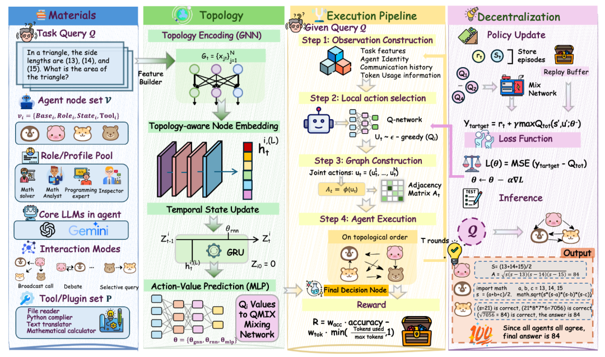
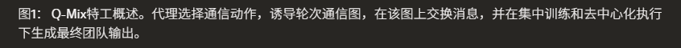
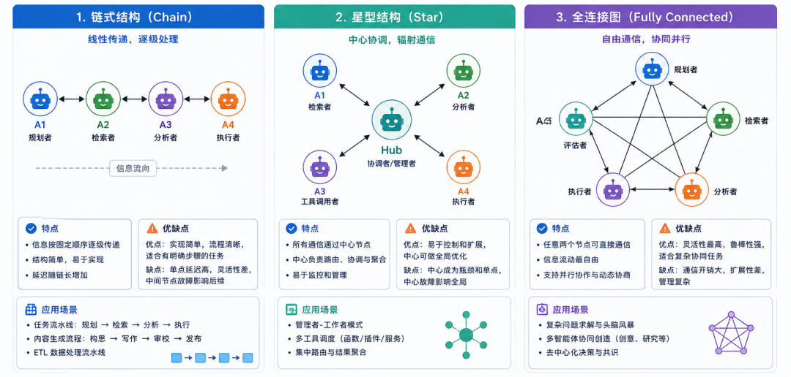
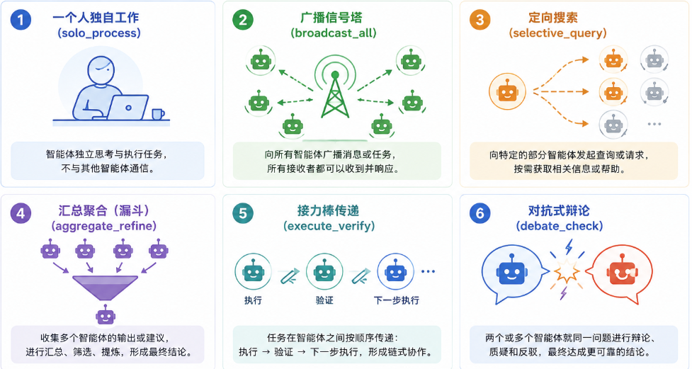
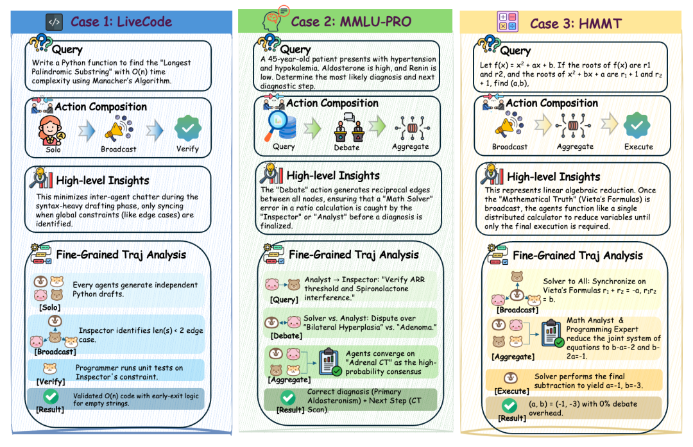
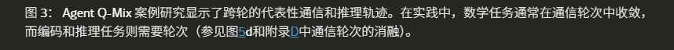

哈喽，我是黑棠。
你有没有想过一个问题：
一个AI团队里，谁该跟谁说话、说多少话，这个问题挺值得被优化的？
现在大多数AI多智能体框架的做法很简单：写死。
研究员Agent接任务 -> 写作员Agent处理内容 -> 审核员Agent检查输出。逻辑是挺清晰的，但不会基于问题的复杂度调整。
那有没有更好的办法？
UCLA、华盛顿大学和西北大学的研究团队换了个思路：
将“AI团队怎么沟通”这件事，变成一个强化学习问题，让模型自己学。


对比一下：
微软 Agent Framework：64.88%
LangGraph：60.03%
AutoGen：63.41%
更厉害的是，Token消耗比大多数多智能体方案 低了4到24倍。
又快又省，还更聪明！
问题出在哪？
现在主流的多智能体框架——ChatDev、MetaGPT、AutoGen——都有一个共同特点：
沟通拓扑由人设计，固定不变。
链式（Chain）、星型（Star）、全连接图（Fully Connected）……不管任务难还是容易，用的是同一张图。
这带来两个问题：
简单任务上，所有 Agent 都在互相发消息，Token 浪费严重
复杂任务上，固定的沟通路径可能刚好错开了最需要协作的地方
近几年有一些改进方向，比如用图神经网络（G-Designer）或扩散模型（GTD）来自动生成拓扑，但它们仍然是"集中式"的：由一个中央组件在任务开始前生成整张图，之后不再调整。
每个 Agent 执行时没有自主决策权，遇到变化也无法临时改变沟通方式。
Agent Q-Mix 想解决的，正是这个"谁来决定沟通、何时决定"的问题。

让每个AI自己选择和谁沟通
论文的核心做法，是把通信拓扑问题重新表述成一个多智能体强化学习（MARL）问题，使用 QMIX 算法求解。
每个 Agent 在每一轮沟通中，可以从6 种沟通动作中选一个：
solo_process：独立工作，不发送任何消息
broadcast_all：向所有其他 Agent 广播消息
selective_query：只向一个特定 Agent 发送查询
aggregate_refine：收集所有其他人的输出，进行汇总整合
execute_verify：把输出传给下一个 Agent 做验证
debate_check：与一个伙伴进行来回辩论
这些动作不规定说什么，只规定"和谁连接"。
所有 Agent 的动作组合在一起，生成当轮的沟通图（邻接矩阵），然后大家按照这张图交换信息。

这样做的好处是：每个 Agent 根据自己观察到的局部信息自己决定和谁沟通，不需要一个中央指挥。训练时用全局信息，部署时每个 Agent 只看自己的状态——这是 CTDE（中心化训练、去中心化执行）范式。
关键不是 AI 说了什么，而是 AI 选择和谁说、什么时候说。
实验里用了只有15 个训练样本，训练 50 轮，在单 CPU 上跑 30-60 分钟就能完成。代价极低，但效果却泛化到了 7 个完全不同的基准测试上。
便宜、准、还能打
论文在 7 个基准测试上做了对比，覆盖编程（LiveCodeBench、HumanEval）、推理（MMLU-Pro）和数学（AIME 2025/2026、HMMT、Beyond-AIME），
用两个底模各跑一遍。
GPT-OSS:120B 底模下的平均准确率对比：
| 72.73% | |
数学题上的提升最明显。HMMT 2025 上，Agent Q-Mix 达到53.33%，比第二名高出10 个百分点。Beyond-AIME 上达到42.00%，优于 AutoGen（37.00%）和 GTD（35.00%）。
Token 效率同样能打。在 MMLU-Pro 上，Agent Q-Mix 用了112K Token，而其他多智能体方法消耗 471K 到 271 万 Token——差距最大达到24 倍，准确率还更高。
还有一个对抗性测试：往团队里注入一个"坏 Agent"，故意给出错误答案。结果 Agent Q-Mix 的准确率只下降了2.86 个百分点（92.86% → 90.00%），而 LLM-Debate 下降 8.57 点，GPTSwarm 和 AutoGen 各下降 10 点。
原因是 QMIX 策略学会了隔离不可靠 Agent——坏 Agent 的沟通权重被自动压低了。
学到的沟通策略
实验里还分析了模型学到的沟通策略，这部分结果很直观。
数学题（AIME、HMMT、Beyond-AIME）：Agent 第一轮倾向于 broadcast_all 广播，让所有人都知道彼此的初步推理路径；第二轮切换到 selective_query 定点查询 和 aggregate_refine 汇总整合，做定点验证和收敛。
编程题（LiveCodeBench）：底模本身就很强，接近满分，Agent 大量选择 solo_process 独立干活，几乎不发消息，省掉绝大多数 Token 开支。
推理题（MMLU-Pro）：混合使用 selective_query 定点查询 和 debate_check 辩论，针对性地交换信息和互相质疑。


而这些策略是在训练中自己发现的，没有人告诉模型"数学题要广播、编程题要独立"。
奖励函数同时考虑了准确率和 Token 消耗，模型自己找到了这个平衡点。
参考链接：
[1] Agent Q-Mix: Selecting the Right Action for LLM Multi-Agent Systems through Reinforcement Learning (https://arxiv.org/abs/2604.00344)
[2] 代码仓库 (https://github.com/ericjiang18/Agent-Q-Mix)
👇点个“在看”，持续更新不迷路～